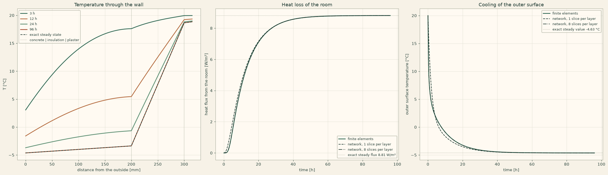

Docs › Examples › Transient conduction in a wall and a lumped thermal network
Heat transfer · 1D
Transient conduction in a wall and a lumped thermal network
A concrete house wall with inside insulation and plaster cools after a drop of the outdoor temperature, with convection and radiation on both faces.
Run locally with OneSimulation. The example downloads are free. Running them requires an activated runtime. The current pilot runs on macOS on Apple Silicon with CPython 3.13. Installation and activation · View pilot plans. Scope of the reference checks.

What it computes
OneSimulation solves the wall as a 1D line through its thickness with quadratic elements, layer-wise properties and nonlinear convective and radiative boundary fluxes, integrated with BDF2 and Newton; the same wall is built as lumped thermal networks of capacities, resistors and radiation links with one and eight slices per layer.
What it checks
A stationary solve hits the exact steady surface balances to 9e-11 K (8.8108 W/m² from the room, -4.632 °C outside); the network with eight slices per layer follows the finite elements to 0.012 W/m² in heat flux and 0.57 K at the outer surface, the one-resistor-per-layer network deviates by up to 0.56 W/m² and 6.1 K in the first hours.
The notebook
The complete notebook, cell by cell. Run it to produce the figures and the comparison printout.
A house wall consists of, from the outside inwards, 200 mm of concrete (the structure), 100 mm of insulation and 15 mm of plaster. It is at 20 °C throughout when the outdoor air and surroundings drop to −5 °C; the room stays at 20 °C. Heat flows through the thickness only, so the wall is a line \(0\le x\le 315\) mm with the outside at \(x=0\):
| layer | thickness [mm] | \(k\) [W/(m K)] | \(\rho c\) [MJ/(m³ K)] | |---|---|---|---| | concrete | 200 | 1.40 | 2.024 | | insulation | 100 | 0.04 | 0.042 | | plaster | 15 | 0.70 | 1.176 |
Both faces lose heat by convection and by grey radiation to their surroundings, with the emissivity \(\varepsilon=0.9\):
| end | condition | |---|---| | start, outside, \(x=0\) | \(q=h_e\,(T-T_e)+\varepsilon\sigma\,(T^4-T_e^4)\), \(h_e=20\) W/(m² K), \(T_e=-5\) °C from \(t=0\) | | end, room side, \(x=315\) mm | \(q=h_i\,(T-T_i)+\varepsilon\sigma\,(T^4-T_i^4)\), \(h_i=2.5\) W/(m² K), \(T_i=20\) °C |
Lumped thermal network. Building physics often replaces a wall by nodes with heat capacities joined by thermal resistors. Here each layer is cut into \(n\) slices; a node sits on every slice face and carries half the heat capacity \(\rho c\,\Delta x\) of the slices on either side, neighbouring nodes are joined by the conductance \(k/\Delta x\), and the two surface nodes exchange heat with the outdoor and room nodes through convection and radiation links. With \(n=1\) this is the classical model with one resistor per layer.
Reference. In the steady state the same heat flux \(q\) crosses both surface films and the series resistance of the layers \(R=\sum d_i/k_i=2.6857\) m² K/W (Incropera and DeWitt, Fundamentals of Heat and Mass Transfer, ch. 3.1 and 1.2.3); the two surface temperatures follow from the two nonlinear balances, solved here with a root finder. During the transient, the finite-element solution is the reference for the networks.
import numpy as np
from onesim.cad.d1 import Line
from onesim.materials import IsotropicSolid
from onesim.meshing import NonuniformLineMesher
from onesim.numerics import Numerics
from onesim.numerics.fem import FiniteElement, Lagrange
from onesim.numerics.linear import SparseDirect
from onesim.numerics.nonlinear import Newton
from onesim.numerics.time import BDF, DEFAULT_TIME_INTEGRATOR_REGISTRY, BackwardEuler
from onesim.physics.heat_transfer import (
ConvectiveHeatFlux,
HeatConduction,
RadiativeHeatFlux,
)
from onesim.physics.systems import (
ThermalLink,
ThermalNetworksConfiguration,
ThermalNetworksPublicApi,
ThermalNode,
)
from onesim.simulation import Problem, Simulation, regionwise
from onesim.simulation.initial_conditions import InitialValue
from onesim.visualization import plots, theme
from scipy.optimize import fsolve
theme.set()Wall line and mesh
The wall is a CAD line through its thickness. The mesh has a node on both layer interfaces and quadratic elements of at most 10 mm.
layers = {
"concrete": (0.200, 1.40, 2.024e6),
"insulation": (0.100, 0.04, 0.042e6),
"plaster": (0.015, 0.70, 1.176e6),
}
interfaces = np.cumsum([0.0, *(d for d, _, _ in layers.values())])
thickness = interfaces[-1]
wall = Line(start=(0.0, 0.0, 0.0), end=(thickness, 0.0, 0.0))
faces = np.unique(
np.concatenate(
[
np.linspace(a, b, int(np.ceil((b - a) / 0.01)) + 1)
for a, b in zip(interfaces[:-1], interfaces[1:])
]
)
)
mesh = NonuniformLineMesher(arclength_faces=tuple(faces)).generate(wall)
print(
f"{len(faces) - 1} quadratic elements, interfaces at {', '.join(f'{1e3 * x:.0f}' for x in interfaces[1:-1])} mm"
)Finite-element model
Conductivity and volumetric heat capacity are given layer by layer with regionwise; with the density set to one, the specific heat capacity is the volumetric one. Both ends carry a convective and a radiative heat flux, which makes every time step nonlinear: Newton's method solves it. Four days in steps of 15 minutes with the second-order BDF method, as for the networks below; a stationary solve of the same problem gives the end state directly.
outdoor, room, sigma, emissivity, h_out, h_in, day = (
268.15,
293.15,
5.670374419e-8,
0.9,
20.0,
2.5,
86400.0,
)
layer_of = [
lambda p, a=a, b=b: (p[:, 0] >= a) & (p[:, 0] <= b)
for a, b in zip(interfaces[1:-1], interfaces[2:])
]
material = IsotropicSolid(
density=1.0,
specific_heat_capacity=regionwise(
tuple(zip(layer_of, (0.042e6, 1.176e6))), default=2.024e6, unit="J/kg/K"
),
thermal_conductivity=regionwise(
tuple(zip(layer_of, (0.04, 0.70))), default=1.40, unit="W/m/K"
),
youngs_modulus=3e10,
poisson_ratio=0.2,
thermal_expansion_coefficient=0.0,
)
model = HeatConduction(domain=wall.line, material=material)
ends = wall.boundaries
problem = Problem(
name="Layered wall",
geometry=wall,
physics=(model,),
boundary_conditions=(
ConvectiveHeatFlux(
boundary=ends.start,
physics=model,
heat_transfer_coefficient=h_out,
ambient_temperature=outdoor,
),
RadiativeHeatFlux(
boundary=ends.start,
physics=model,
emissivity=emissivity,
ambient_temperature=outdoor,
),
ConvectiveHeatFlux(
boundary=ends.end,
physics=model,
heat_transfer_coefficient=h_in,
ambient_temperature=room,
),
RadiativeHeatFlux(
boundary=ends.end,
physics=model,
emissivity=emissivity,
ambient_temperature=room,
),
),
initial_conditions=(InitialValue(model.temperature, room),),
)
numerics = dict(
spatial=FiniteElement(element=Lagrange(order=2)),
linear_solver=SparseDirect(),
nonlinear_solver=Newton(absolute_tolerance=1e-6),
)
temperature = (
Simulation(
problem=problem,
mesh=mesh,
numerics=Numerics(
**numerics, time_integrator=BDF(order=2, startup=BackwardEuler())
),
)
.run(start_time=0.0, end_time=4 * day, time_step=day / 96)
.field(model.temperature)
)
stationary = (
Simulation(
problem=problem,
mesh=mesh,
numerics=Numerics(**numerics, initial_guess={model.temperature: room}),
)
.solve_stationary()
.field(model.temperature)
)Lumped thermal networks
Networks with one and with eight slices per layer, per square metre of wall. The outdoor and room nodes have imposed temperatures; the surface links carry convection and radiation, with their derivatives for the implicit BDF2 integrator.
film = lambda h: dict(
heat_flow_law=lambda a, b, t, p: h * (a - b) + emissivity * sigma * (a**4 - b**4),
heat_flow_tangent=lambda a, b, t, p: (
h + 4 * emissivity * sigma * a**3,
-h - 4 * emissivity * sigma * b**3,
),
)
networks = {
n: ThermalNetworksPublicApi().run(
ThermalNetworksConfiguration(
parameters={
"nodes": (
*(
ThermalNode(
f"node {j}",
thermal_capacity=0.5
* sum(c * d for d, _, c in slices[max(j - 1, 0) : j + 1]),
initial_temperature=room,
)
for j in range(len(slices) + 1)
),
ThermalNode("outdoor", imposed_temperature=outdoor),
ThermalNode("room", imposed_temperature=room),
),
"links": (
*(
ThermalLink(
f"slice {j}",
f"node {j}",
f"node {j + 1}",
conductance=k / d,
)
for j, (d, k, _) in enumerate(slices)
),
ThermalLink("outside film", "node 0", "outdoor", **film(h_out)),
ThermalLink(
"inside film", f"node {len(slices)}", "room", **film(h_in)
),
),
"time_integrator": DEFAULT_TIME_INTEGRATOR_REGISTRY.resolve_id("bdf2"),
"final_time": 4 * day,
"time_step": day / 96,
}
)
)
for n in (1, 8)
for slices in [[(d / n, k, c) for d, k, c in layers.values() for _ in range(n)]]
}Results
The heat flux from the room into the wall and the outer surface temperature from the finite elements and the two networks, and the exact steady state they approach.
surface = lambda T, ambient, h: h * (ambient - T) + emissivity * sigma * (
ambient**4 - T**4
)
resistance = sum(d / k for d, k, _ in layers.values())
steady_out, steady_in = fsolve(
lambda T: [
surface(T[1], room, h_in) - (T[1] - T[0]) / resistance,
surface(T[1], room, h_in) + surface(T[0], outdoor, h_out),
],
[outdoor, room],
)
steady_flux = surface(steady_in, room, h_in)
times, probes = temperature.time_series([[0.0, 0.0, 0.0], [thickness, 0.0, 0.0]])
fem = {"flux": surface(probes[:, 1], room, h_in), "outer": probes[:, 0]}
lumped = {
n: {
"times": net.times,
"flux": surface(net.temperatures[f"node {3 * n}"], room, h_in),
"outer": net.temperatures["node 0"],
}
for n, net in networks.items()
}
print(
"time [h] heat flux from the room [W/m²]: FE n = 1 n = 8 | outer surface [°C]: FE n = 1 n = 8"
)
for hours in (1, 3, 6, 12, 24, 48, 72, 96):
t = hours * 3600.0
print(
f"{hours:8d} {np.interp(t, times, fem['flux']):38.4f} "
+ " ".join(
f"{np.interp(t, net['times'], net['flux']):8.4f}" for net in lumped.values()
)
+ f" | {np.interp(t, times, fem['outer']) - 273.15:23.3f} "
+ " ".join(
f"{np.interp(t, net['times'], net['outer']) - 273.15:8.3f}"
for net in lumped.values()
)
)
print(
f"exact steady state: heat flux {steady_flux:.4f} W/m², outer surface {steady_out - 273.15:.3f} °C, inner surface {steady_in - 273.15:.3f} °C"
)
ends_fe = stationary.evaluate([[0.0, 0.0, 0.0], [thickness, 0.0, 0.0]]).ravel()
print(
f"stationary FE: heat flux {surface(ends_fe[1], room, h_in):.4f} W/m², outer surface {ends_fe[0] - 273.15:.3f} °C, inner surface {ends_fe[1] - 273.15:.3f} °C, "
f"largest surface deviation from the exact values {np.max(np.abs(ends_fe - [steady_out, steady_in])):.1e} K"
)
print(
f"after 4 days: FE flux {fem['flux'][-1]:.4f} W/m² ({100 * (fem['flux'][-1] / steady_flux - 1):+.4f} %), "
f"outer {probes[-1, 0] - 273.15:.3f} °C, inner {probes[-1, 1] - 273.15:.3f} °C"
)
print(
"largest deviation from the finite elements over the 4 days: "
+ ", ".join(
f"n = {n}: flux {np.max(np.abs(np.interp(net['times'], times, fem['flux']) - net['flux'])):.4f} W/m², "
f"outer surface {np.max(np.abs(np.interp(net['times'], times, fem['outer']) - net['outer'])):.3f} K"
for n, net in lumped.items()
)
)Figure
The temperature through the wall after 3, 12, 24 and 96 hours with the exact steady profile, the heat flux from the room and the outer surface temperature over time.
x = np.linspace(0.0, thickness, 631)
line = np.column_stack((x, np.zeros_like(x), np.zeros_like(x)))
steady_profile = np.interp(
x,
interfaces,
steady_out
+ (steady_in - steady_out)
* np.cumsum([0.0, *(d / k for d, k, _ in layers.values())])
/ resistance,
)
fig = plots.figure(1, 3, size=(21, 6))
plots.line(
y={
f"{hours} h": (
1e3 * x,
temperature.evaluate(line, time=hours * 3600.0).ravel() - 273.15,
)
for hours in (3, 12, 24, 96)
},
reference={"exact steady state": (1e3 * x, steady_profile - 273.15)},
vlines={"concrete | insulation | plaster": 200.0, "": 300.0},
xlabel="distance from the outside [mm]",
ylabel="T [°C]",
title="Temperature through the wall",
legend="upper left",
ax=fig[0],
)
plots.line(
y={"finite elements": (times / 3600, fem["flux"])},
reference={
f"network, {n} slice{'s' if n > 1 else ''} per layer": (
net["times"] / 3600,
net["flux"],
)
for n, net in lumped.items()
},
hlines={f"exact steady flux {steady_flux:.2f} W/m²": steady_flux},
xlabel="time [h]",
ylabel="heat flux from the room [W/m²]",
title="Heat loss of the room",
legend="lower right",
ax=fig[1],
)
plots.line(
y={"finite elements": (times / 3600, fem["outer"] - 273.15)},
reference={
f"network, {n} slice{'s' if n > 1 else ''} per layer": (
net["times"] / 3600,
net["outer"] - 273.15,
)
for n, net in lumped.items()
},
hlines={f"exact steady value {steady_out - 273.15:.2f} °C": steady_out - 273.15},
xlabel="time [h]",
ylabel="outer surface temperature [°C]",
title="Cooling of the outer surface",
legend="upper right",
ax=fig[2],
)
plots.show()Going further
Swap the layers in layers so that the insulation lies outside (and the network follows): the steady flux stays the same, but the room side now reacts within days instead of hours. Or give the outdoor node and the boundary a daily temperature cycle and read off the damping and the time lag of the wall.